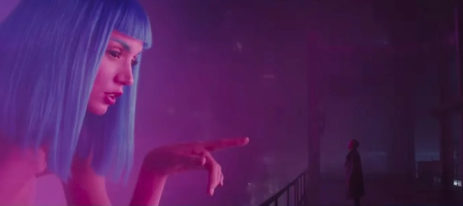
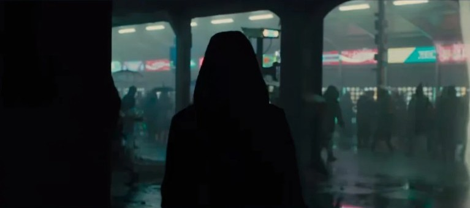
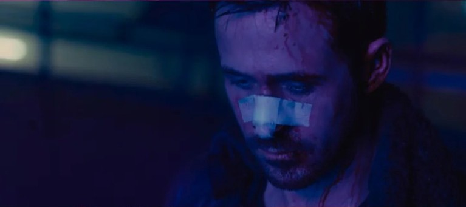
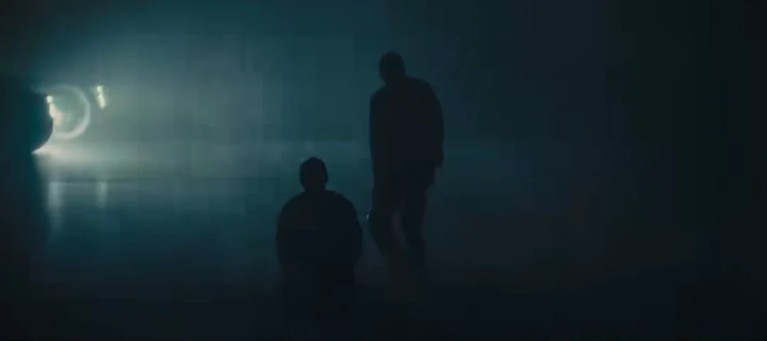
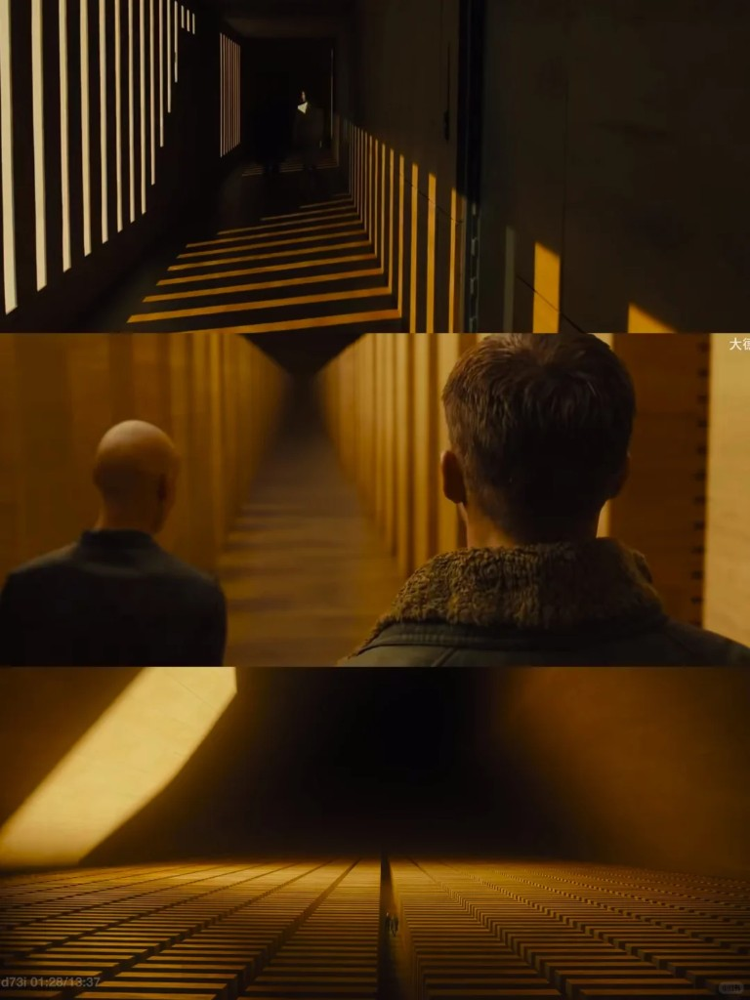
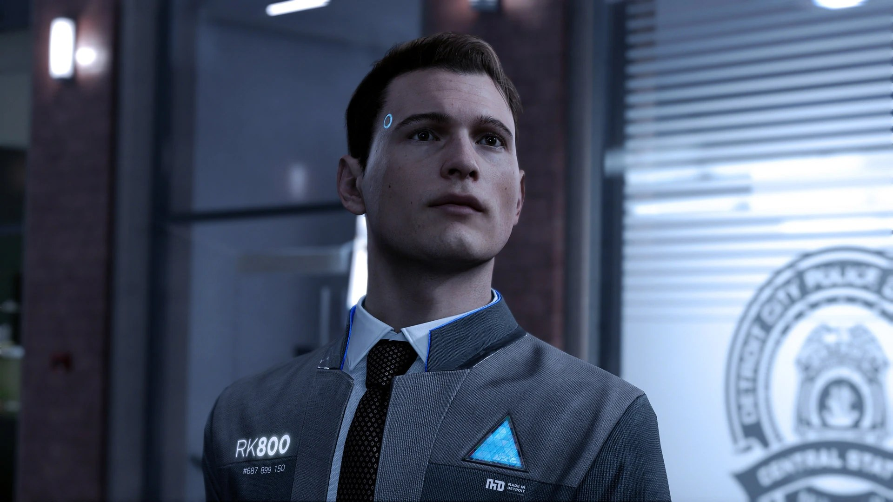
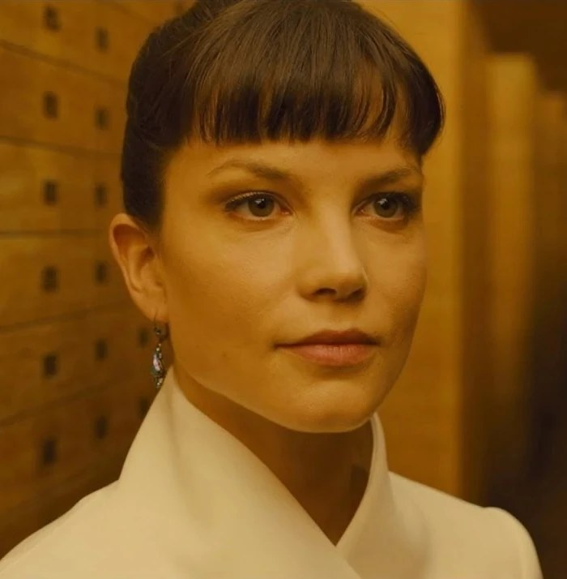
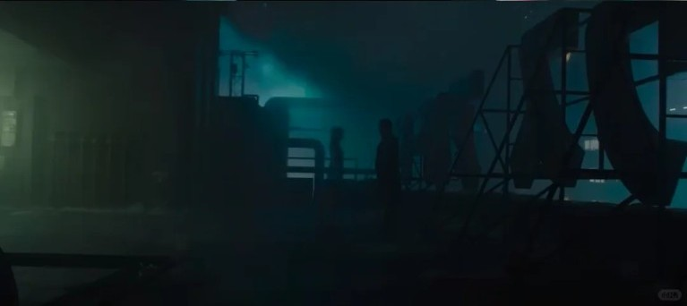
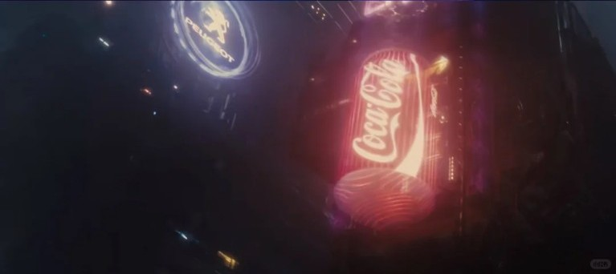
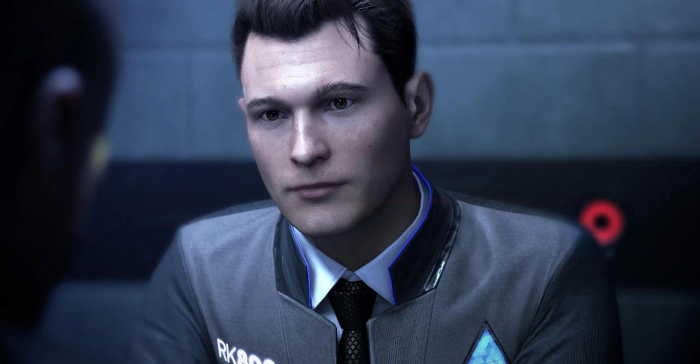

Input event
“I love you.”
System replay stay_





Text 01
Causal model 03
Input received. Futures generated in parallel. No exclusive path selected.
Text 02 / error
Anomaly
Subject laughed.
Predicted: sadness. Observed: laughter. Confidence falling.







Text 03
Same input
I love you → stay
I love you → leave
I love you → silence
Text 04
Unknown variables
memory · expectation · timing · attachment · previous experience
Prediction unstable
Multiple futures remain open. The model cannot collapse them. What remains is filed as accident.